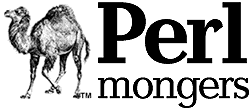

rehovot.pmThe use of the camel image in association with the Perl language is a trademark of O'Reilly & Associates, Inc. Used with permission. |
Welcome to the home page of the Rehovot Perl Mongers group, also known as Rehovot.pm. Anyone is welcome to join: you don't even have to live in Rehovot!
We welcome you to join our mailing list at
Rehovot-pm |